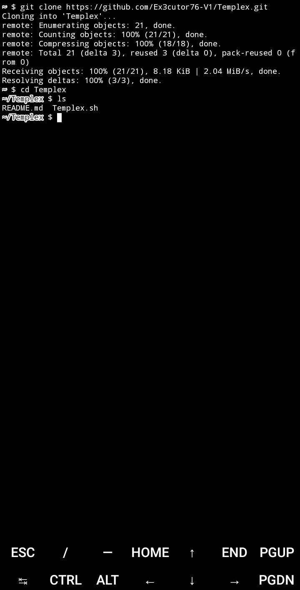
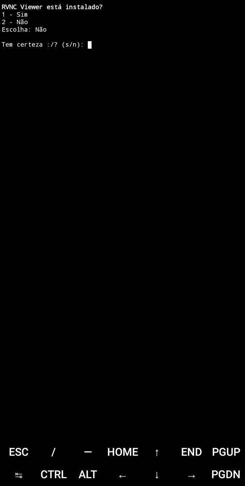
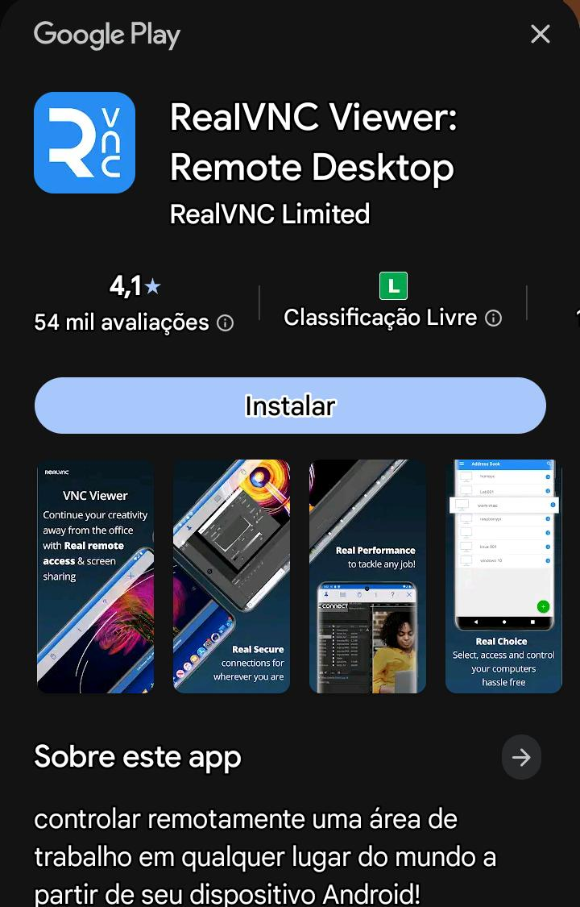
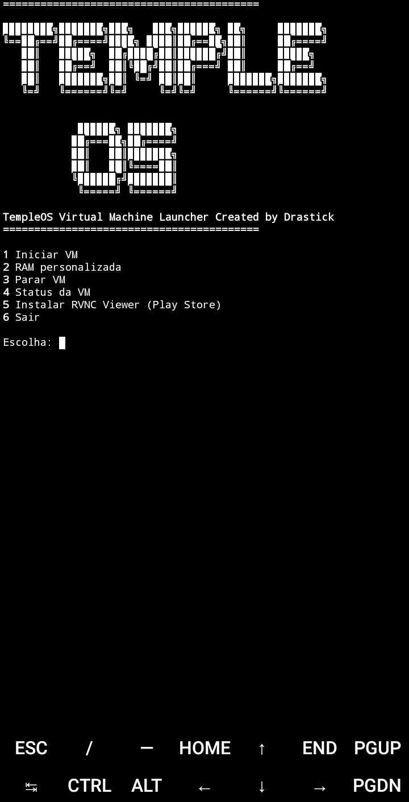
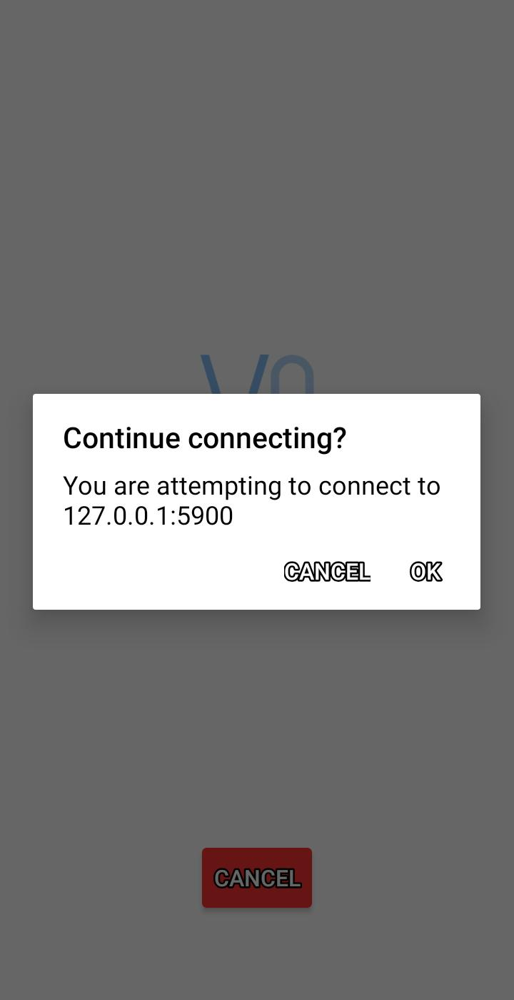
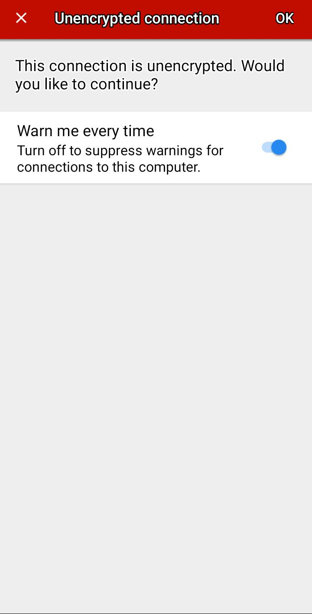
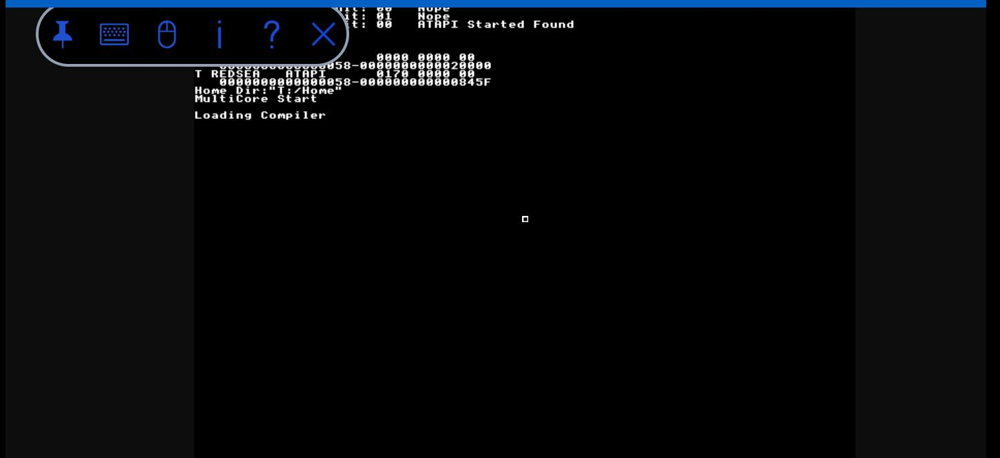

Templex: O TempleOS só que no celular
Lembra do TempleOS? Pois é, eu e o meu amigo Drastick amamos esse sistema operacional e decidimos
simplesmente criar uma forma de usar o TempleOS de forma fácil e eficaz, sem muita demora e bem eu
e o Drastick decidimos que um fará a parte automatizada e o outro fará principalmente a parte manual
já que nós dois queremos atingir um público tanto hardcore quanto o iniciante, então decidimos criar
um repositório separado, um sendo automatizado e o outro manual.
Mas antes de começar aqui vai um breve explicação de diferenças:
TempleDroid: Feito pelo Drastick, com a minha ajuda, fizemos o script em bash puro e fizemos testes pelo
termux, para termos certeza que irá funcionar, fizemos diversos testes e bem, funcionaram e sim o TempleDroid
é feito manualmente.
Templex: É feito por mim, alterando algumas coisas e claro com o mesmo script, mas automatizando tudo em um só
script em bash e claro foi feito como algo automatizado do TempleDroid.
Forma automatizada:
Bem a automatizada se chama Templex e bem ela é a forma automatizada do TempleDroid, como podem perceber e aqui vai
a instalação:

Primeiro de tudo use esses comandos:
Instale o git: pkg install git
Clone o repositório: git clone https://github.com/Ex3cutor76-V1/Templex.git
Entre no repositório: cd Templex/
Dê permissão ao script: chmod +x Templex.sh
Uso:
Agora para usar só usar: ./Templex.sh ou bash Templex.sh
E ele irá aparecer nessa tela após instalar os requisitos:

Que sim ele está perguntando se você tem um software chamado RVNC Viewer que é uma VM, se caso você não tem coloque: Não
Mas se caso você tem coloque: Sim
E sim ele até pergunta se você tem certeza, falando pra digitar s ou n.

Caso você não tenha o RVNC Viewer ele irá te mandar nessa página que é só você clicar em instalar e após instalar você volte ao Termux

Após aquelas horas de instalação de requisitos, ele vai aparecer nessa tela de menu que bem você pode selecionar a opção que quer, se caso
você quer iniciar a VM e já havia instalado os requisitos (Que no caso do Templex é automático) use 1.

Após um tempo ele irá iniciar a VM e claro irá aparecer isso, logo após isso só clicar em "Ok", afinal ele só vai utilizar a porta TCP 5900
na rede tor (No caso: 127.0.0.1).

Agora vai aparecer isso, que bem é um aviso de fato, mas acredite, isso não afeta nada no seu sistema e estou fazendo isso no celular só pra
não te assustar e bem para tirar isso só clicar em "Ok" lá em cima.

E pronto! Conseguimos rodar a VM no celular, e sim o TempleOS realmente é meio bugado, mas acredite ele é mais fácil ser usado assim em uma VM
já que o TempleOS foi feito na verdade para hardware antigo e não para hardware novo.